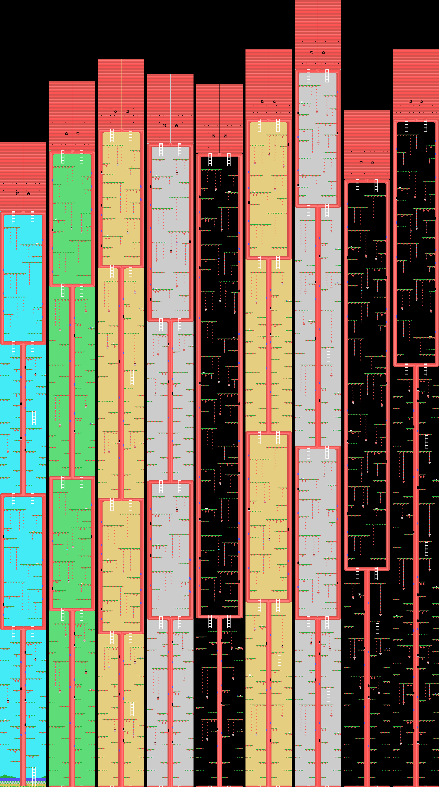
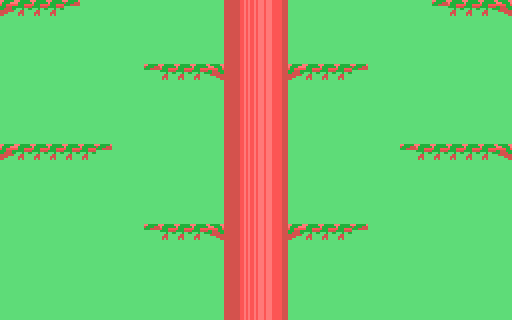
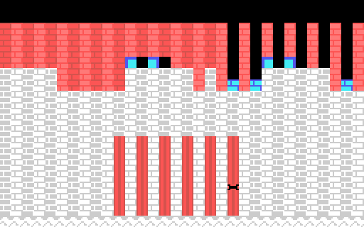

The game

The hero climbs a giant tree through nine stages: from branch to branch, up ladders and vines, among apples, nests, doors in the trunk and spiders.
Each stage is a script: a list of three-byte entries —steps since the previous one, type and column— that the cartridge uploads to VRAM at the start and pulls out as you climb. One step is eight pixels, one row of cells. The only thing not in the list is the trunk in the middle.
The pictures below are neither captures nor the cartridge running: they are each stage's script fed through the cartridge's scenery step, rewritten in Python (tools/arbol.py), stacking the middle row of the screen at every step. Checked against openMSX, climbing each whole stage thirty steps at a time: 0 cells different out of 104,832.
What each stage holds
| stage | steps | branches | apples | spiders | doors | sky |
|---|---|---|---|---|---|---|
| 1 | 451 | 98 | 21 | 5 | 10 | cyan |
| 2 | 493 | 98 | 15 | 12 | 8 | light green |
| 3 | 508 | 103 | 20 | 13 | 12 | light yellow |
| 4 | 498 | 103 | 23 | 14 | 12 | grey |
| 5 | 491 | 87 | 27 | 16 | 13 | black |
| 6 | 515 | 103 | 17 | 12 | 9 | light yellow |
| 7 | 549 | 110 | 26 | 19 | 14 | grey |
| 8 | 473 | 83 | 17 | 16 | 10 | black |
| 9 | 515 | 114 | 26 | 19 | 15 | black |
Stage 1 starts on the ground, by the river. The other eight start at the foot of a hollow chamber in the trunk, a red section with two ladders at the top and two at the bottom. All of them end with two red rows and two round windows.
The colour of the sky is the stage's mask, (0xE05D): the first stage's comes from the initial values at 0x51C1, and the others from the table at 0x741F.
The nine stages
Bottom to top, the way they are climbed. First all nine together, standing on the ground, and then each one full size.

Stage 1

Stage 2

Stage 3

Stage 4

Stage 5

Stage 6

Stage 7

Stage 8

Stage 9

Between stages, and the castle
When the stage changes, 0x7629 paints a 32-column tree from the middle outwards, in the colours of the stage that starts. After the ninth it paints the castle, and on top the windows at 0x7600 with the two characters and the sign. Both checked against openMSX down to 0 bytes.


The menu screens
Built from the ROM and checked against openMSX down to 0 bytes.